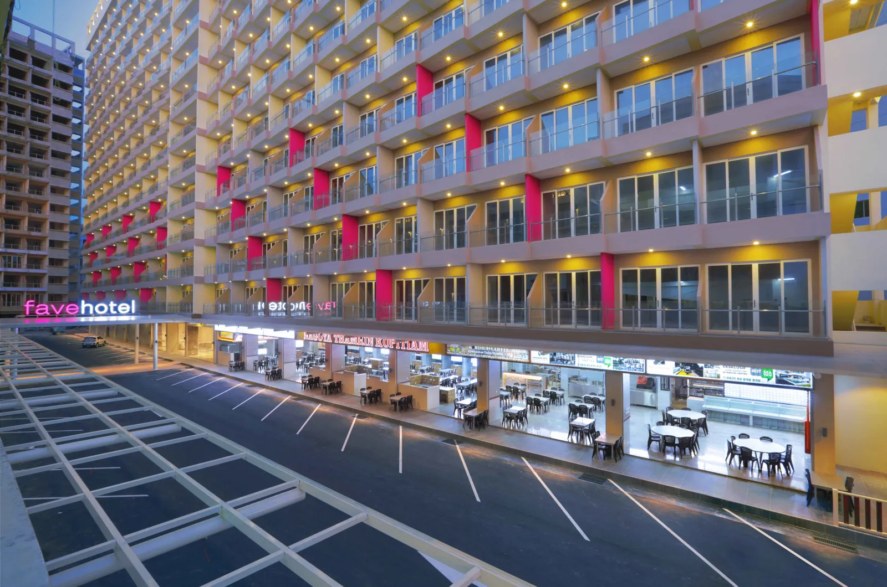

favehotel Nagoya Batam berlokasi strategis di kawasan bisnis utama Nagoya di Pulau Batam dengan Bandara Internasional Hang Nadim, Terminal Feri Batam Center, dan Harbour Bay, semuanya dapat ditempuh dalam waktu 30 menit berkendara. Lokasi ideal ini merupakan tempat liburan yang sempurna bagi pelancong bisnis maupun rekreasi. Pulau Batam dekat dengan Singapura dan Malaysia.